Camilla Sodré uma marca do zero ao ar.
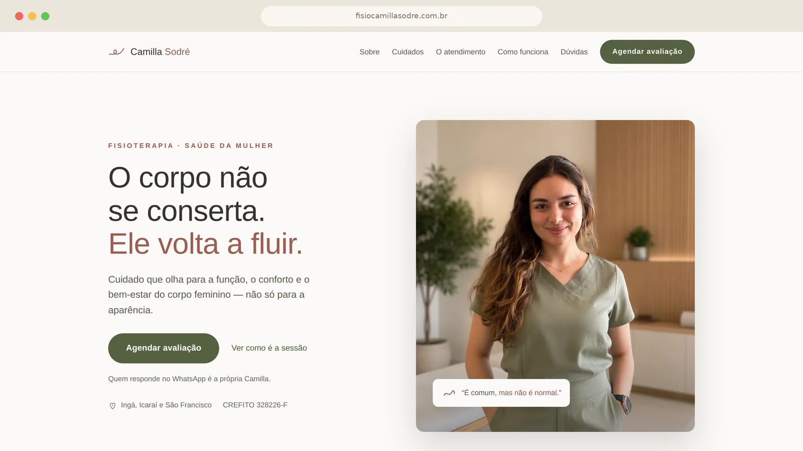
O DESAFIO
Conteúdo bom, embalagem inconsistente. A Camilla tinha presença, formação e uma escuta que os pacientes elogiavam — mas a marca não traduzia nada disso. Fisioterapia pélvica ainda carrega tabu: a paciente costuma chegar depois de anos ouvindo que dor é normal. A comunicação precisava resolver constrangimento antes de vender procedimento.
A SOLUÇÃO
Diagnóstico de posicionamento primeiro, arte depois. O território ficou sendo Fluência — o corpo não se conserta, ele volta a fluir — e daí saíram identidade, paleta rosé e sage, sistema tipográfico, landing page de conversão, sistema de carrosséis e diretrizes de vídeo. Uma decisão de território que organiza todas as outras.
A ENTREGA
Uma marca coerente e pronta para escalar: reconhecível sem o logo, com templates que aceleram a produção e uma landing page publicada, responsiva e no ar — você pode conferir agora ↗
O QUE FOI ENTREGUE
O SÍMBOLO
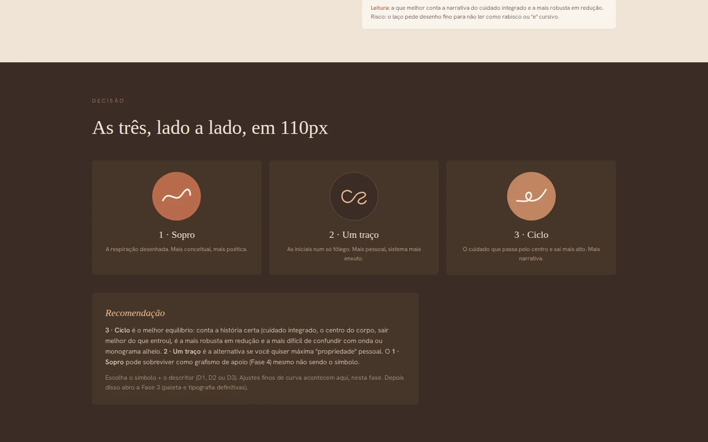
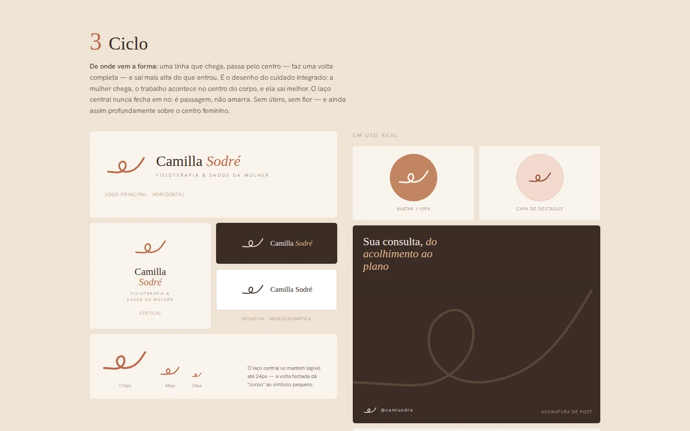
COR, TIPOGRAFIA E FOTOGRAFIA
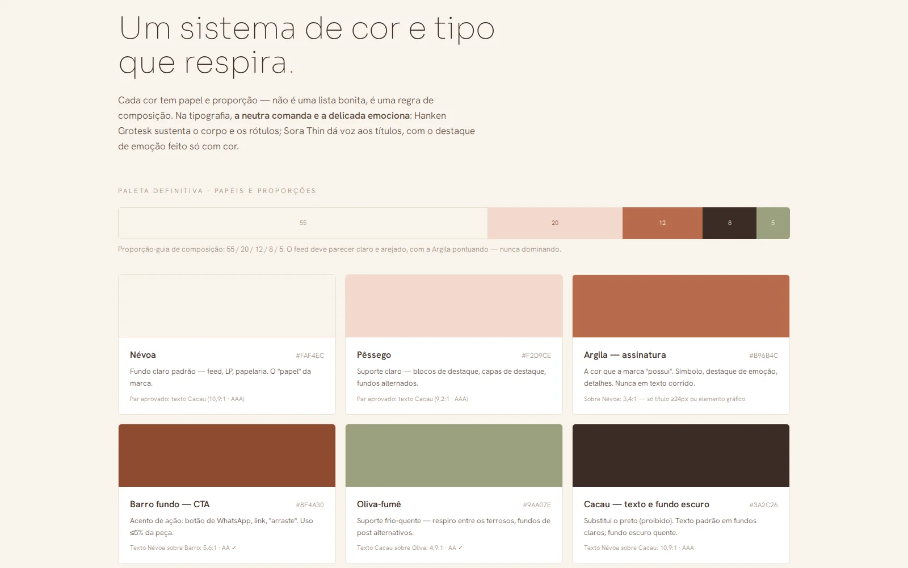
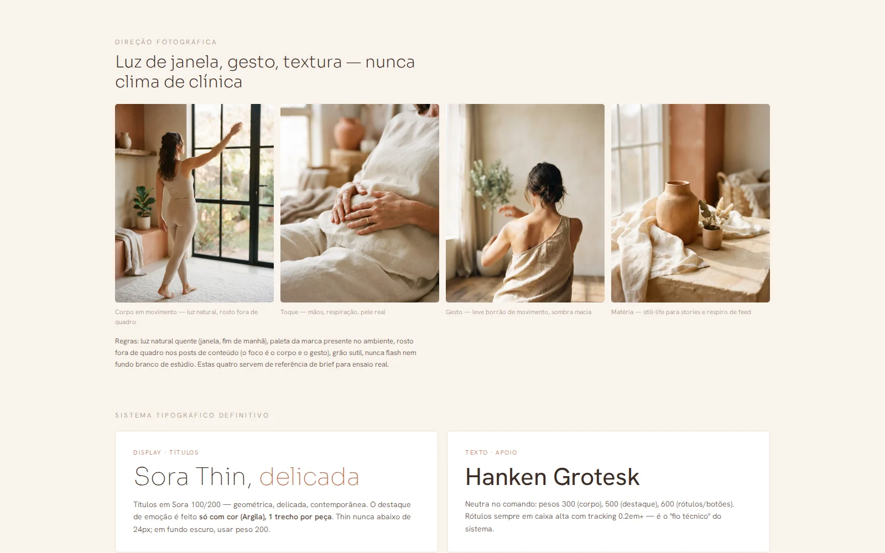
A CAMADA GRÁFICA
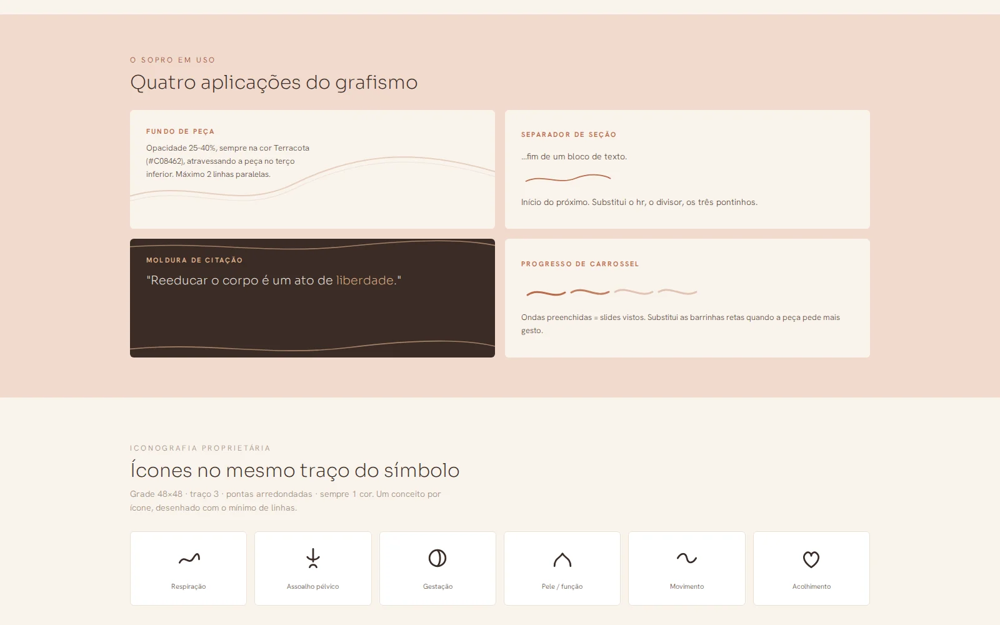
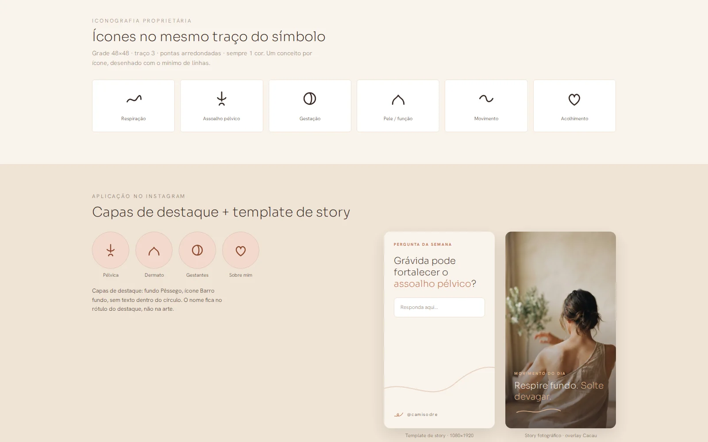
O SISTEMA DE FEED
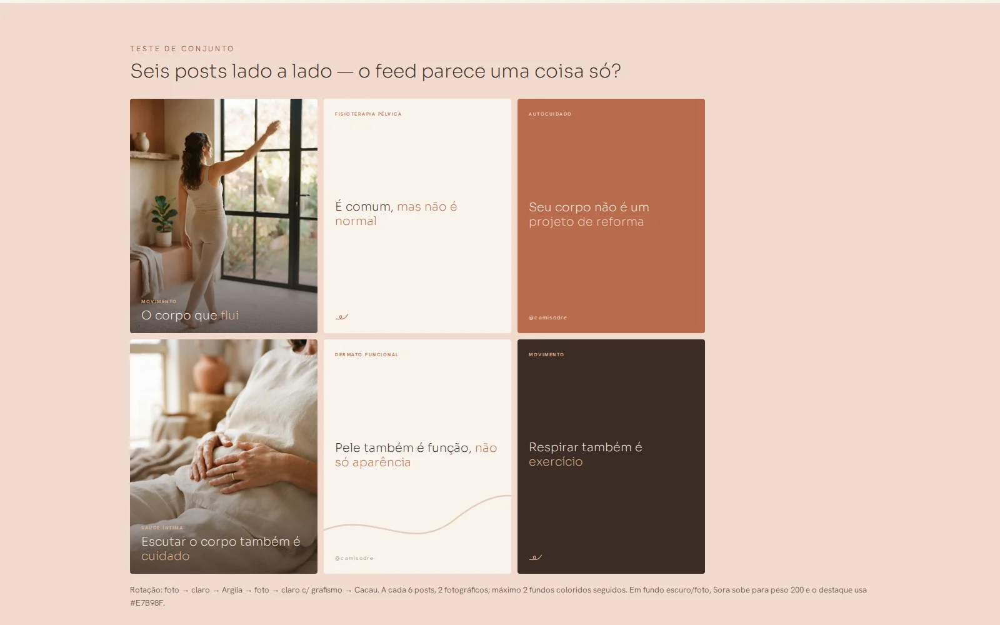
A PAPELARIA
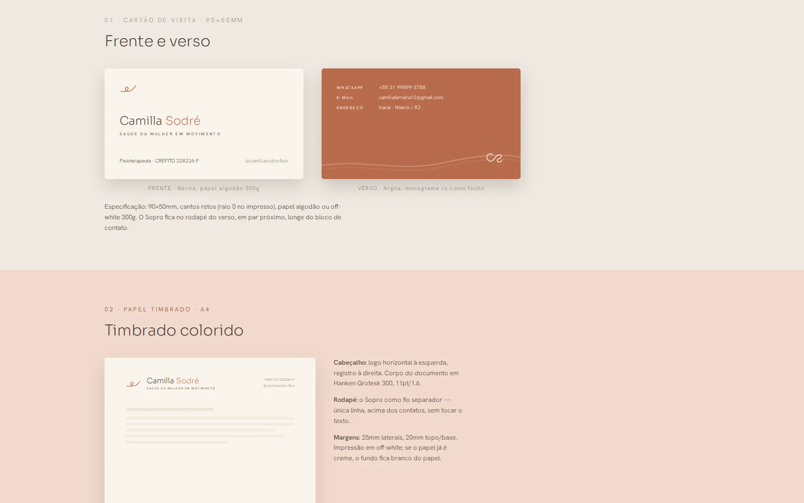
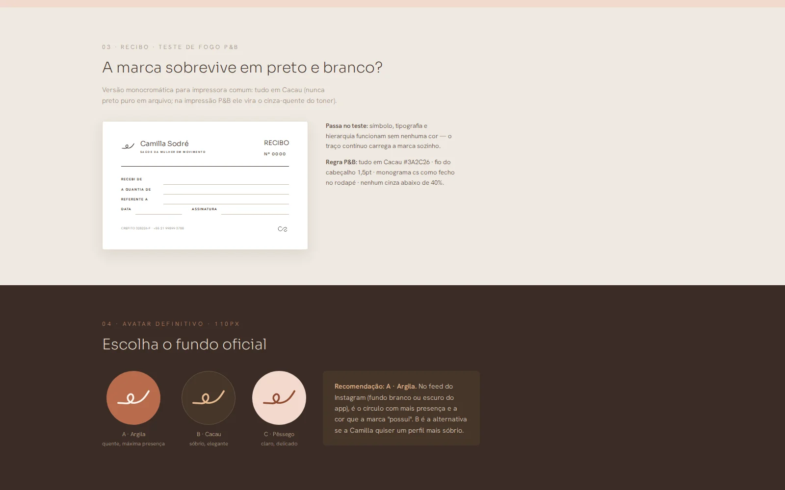
O SITE NO AR

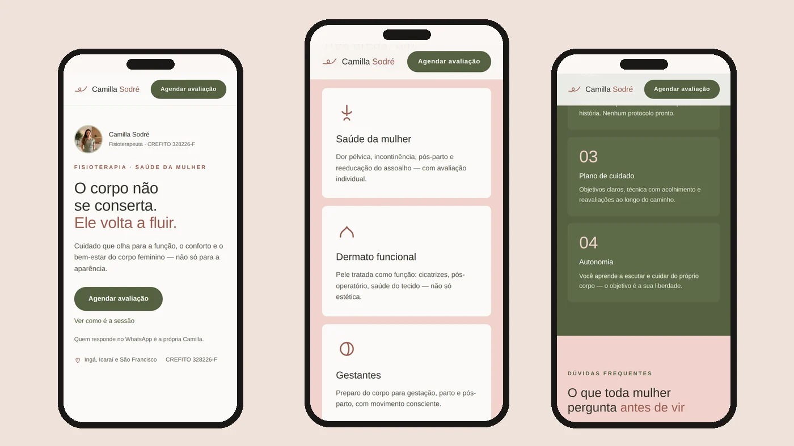
AS DECISÕES
O território veio antes da paleta
A primeira entrega não foi arte, foi uma frase: "o corpo não se conserta, ele volta a fluir". Ela define o que a marca diz e o que ela se recusa a dizer — nada de antes-e-depois, nada de linguagem de reparo. Com o território fechado, cor, tipografia e roteiro deixaram de ser opinião.
Paleta terrosa em vez de rosa de clínica
Saúde da mulher tem um rosa padrão que comunica "produto feminino", não "profissional de saúde". A paleta foi para névoa, pêssego, argila e cacau: acolhe sem infantilizar, e funciona tanto no ambiente do consultório quanto na tela do celular.
Contraste checado antes de fechar a paleta
Cacau sobre névoa dá 10,9:1 e passa em AAA. A argila sobre névoa dá 3,4:1 e só pode aparecer acima de 24px ou como elemento gráfico. Definir isso na origem evitou o retrabalho de descobrir na hora de publicar que metade do texto não se lê.
Três rotas de símbolo, decididas em 110 pixels
Sopro, Um traço e Ciclo foram desenhados até o fim e comparados no tamanho em que a marca realmente aparece: 110 px, o avatar do Instagram. Ganhou o Ciclo — a linha que chega, passa pelo centro e sai mais alta do que entrou. Símbolo que só funciona grande não é símbolo, é ilustração.
Uma marca que sobrevive à fotocópia
Antes de fechar, o logotipo passou pelo teste de recibo em preto e branco: sem cor, sem degradê, impresso torto numa folha sulfite. É o pior cenário real de uma clínica — e o que garante que a marca continua legível no carimbo, no papel timbrado e no PDF que a paciente imprime em casa.
Landing page antes do perfil
A escolha foi publicar o site primeiro e só depois montar o sistema de conteúdo. Perfil de Instagram sem destino manda tráfego para lugar nenhum; com a página no ar, cada post passou a ter para onde apontar — e o WhatsApp virou o único caminho de conversão, sem formulário no meio.